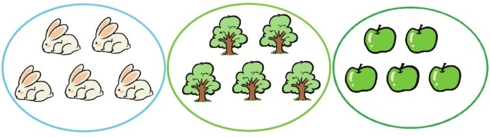
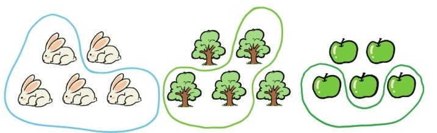

从现实中抽象出数字1，2，3，4，5，…这是数学的起点，是数学抽象的第一步。现在要重新审视这个起点，我们要问这样一个问题：
问题69：当从5只兔子，5棵树，5个苹果……中抽象出5这个数字概念的时候，我们忽略了哪些信息？
世界上没有两只一模一样的兔子，也没有两棵一模一样的树，一模一样的苹果。但是从5只兔，5棵树，5个苹果……中抽象出数字5的时候，我们只在乎兔子，树，苹果的个数，而忽略了兔子与兔子之间的区别，树与树之间，苹果与苹果之间的区别。
如果考虑这些区别，就会抽象出一个比自然数更宽广的概念——集合。集合是由一些特定的对象构成的，这些对象称为集合的元素。比如这5只兔，那5棵树，这5个苹果都构成一个集合。

实际上，任意指定一些元素都可以确定一个集合，比如上面这3个集合中任意划出4只兔子，3棵树，2个苹果也都可以构成新的集合。

集合完全由它的元素决定，比如任意取几个字母a，d，h或者数字2，4，19，23都可以构成唯一的集合{a,d,h}或{2,4,19,23}。注意{a,d,h}和{h,d,a}是同一个集合，只是元素的书写顺序不同，同样的{2,4,19,23}和{4,23,19,2}也是同一个集合。
一般都是用大写字母A，B，C，…表示集合，用小写字母a，b，c，…表示集合元素，用记号a∈A表示a是集合A的元素，读作a属于A，用记号a∉A表示a不是集合A的元素，a不属于A。
在这5只兔的集合中，每只兔子都是不一样的，同样地，5棵树的集合中，5个苹果的集合中，每棵树，每个苹果也都是不一样的。实际上集合中的任意两个元素都是不同的。
如果忽视集合中元素的不同，只关注元素的数量，就可以从5只兔，5棵树，5个苹果……中抽象出数字5。所有正整数1，2，3，…都可以看成是某些集合中元素的个数，那么0呢？引入空集，记作∅，表示不包含任何元素的集合，空集中元素的个数就是0。
以上所举例的集合都只有有限个元素，这样的集合为有限集。元素个数为n的有限集称为n元集合。无限多个元素也可以构成集合，称为无限集，比如所有自然数构成的集合记作N，所有整数，所有正整数，所有有理数，所有实数，所有复数构成的集合分别记作Z，Z+，Q，R，C。在几何中也有各种无限集，比如平面上的所有点，所有直线，所有线段，所有长度为1的线段，所有三角形，所有直角三角形……都可以构成集合。
还可以在已知集合中加入限制条件，选出所有满足条件的元素构成新集合，比如所有大于2小于8的自然数构成一个集合，记作
{a∈N|2<a<8}。
所有大于0且小于1的实数也构成一个集合，记作
{a∈R|0<a<1}。
简记作(0,1)，称为（数轴上的）开区间。类似地，所有大于-4且小于等于6的实数构成一个集合记作(-4,6]，称为半开半闭区间，所有大于等于-1且小于等于1的实数也构成一个集合记作[-1,1]，称为闭区间。我们引入符号+∞和-∞分别表示正无穷大和负无穷大，这时上面的记号还可以拓展，例如所有大于等于2的实数构成的集合可以记作[2,+∞)，所有小于-1的实数构成的集合可以记作(-∞，-1)。
注意(0,1)，(-4,6]，[-1,1]，[2,+∞)和(-∞,-1)这些集合中的元素都是实数，都属于R，所以(0,1)，(-4,6)和[-1,1]等都是R的子集。一般地，如果一个集合A中的每个元素都属于集合B，则称A是的B子集，记作A⊆B。显然任何集合A都是自身的子集，A⊆A总是成立的。
教科书中有这样的规定：空集是任何集合的子集。但是好奇心很强的学生还是会问：
问题70：为什么空集是任何集合的子集？
子集的刻画条件“一个集合A中的每个元素都属于集合B”其实还有一种等价说法，那就是“集合A中没有集合B之外的元素”，这时很容易看出来空集总是满足这个条件，因为空集中没有任何元素。
提问时间
11.1.1 请问一个3元集合有几个子集？
11.1.2 请问(0,1)，(-4,6]，[-1,1]，[2,+∞)和(-∞,1)这5个集合中哪个集合是哪个集合的子集？